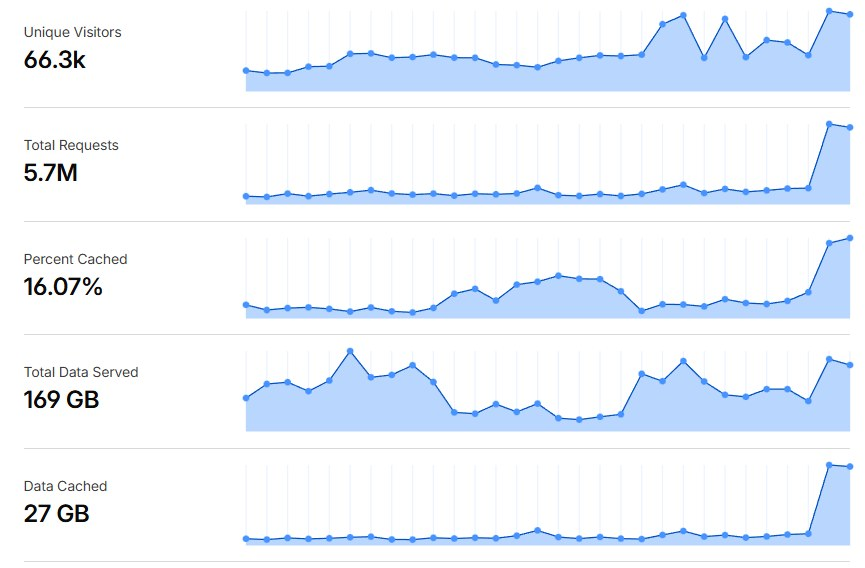
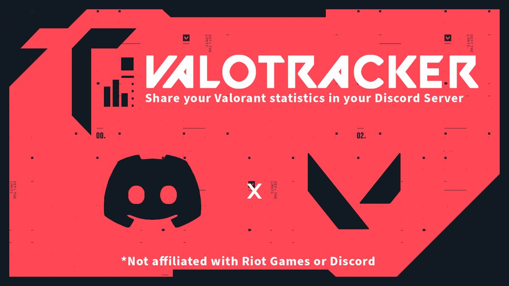
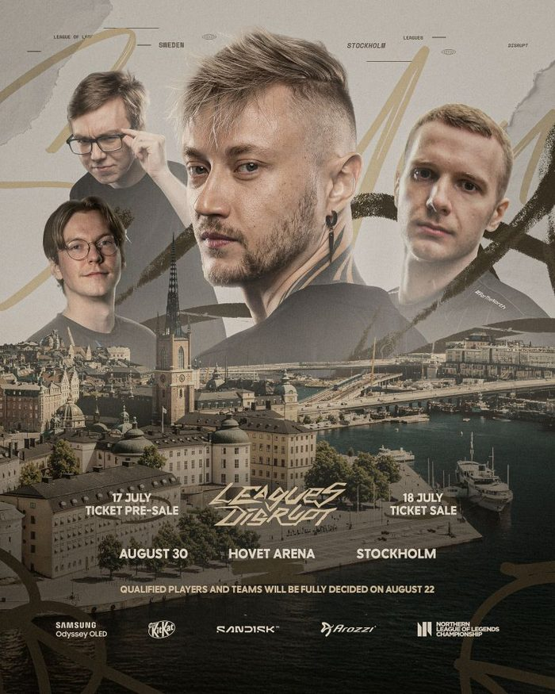
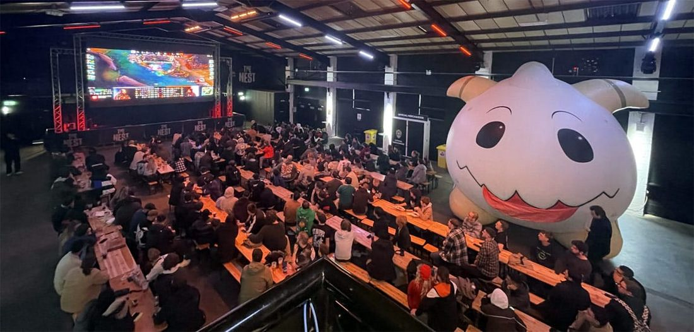
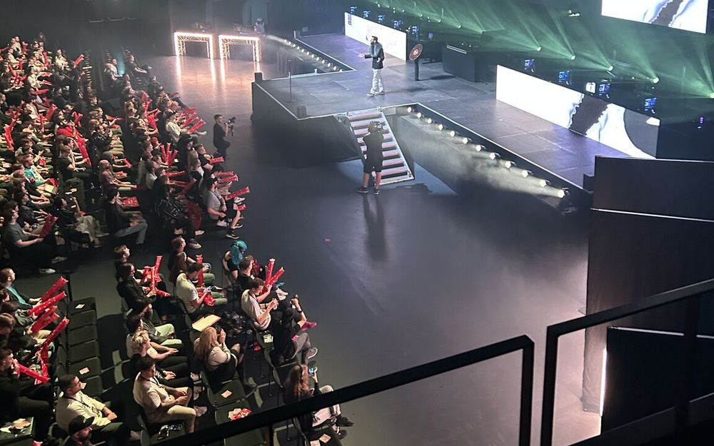
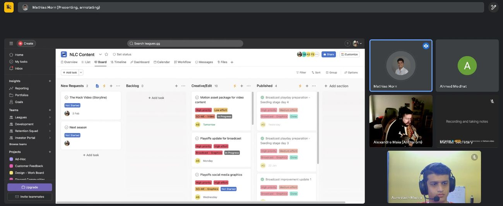
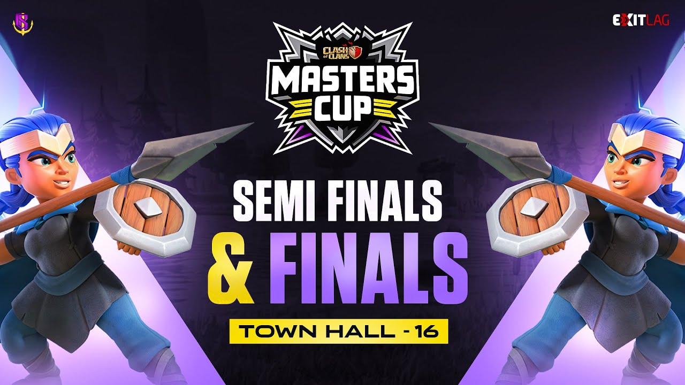
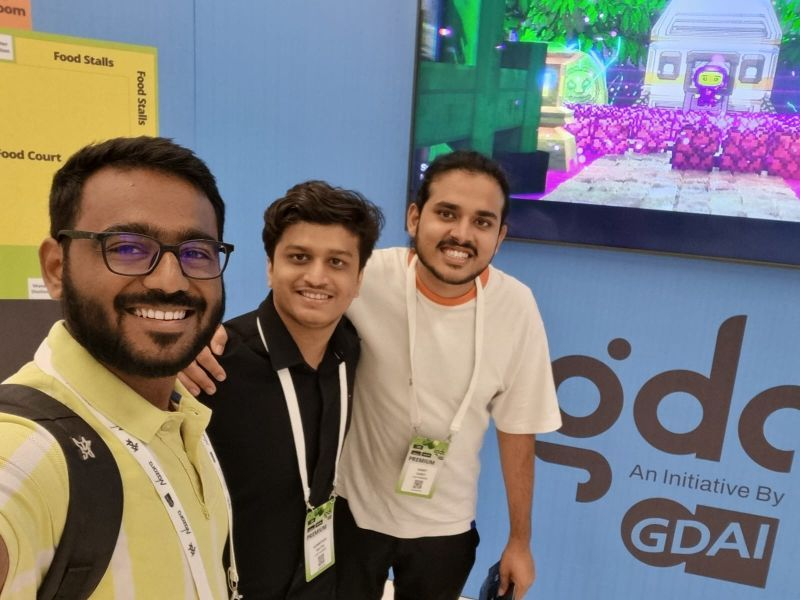

Product and growth operator, in Bengaluru since August 2025. Three stories so far: a Danish esports company I stayed with until the very last day, an Indian gaming company that started as a Discord server, and dubdub, where I am now.
STORY I · 2024 — 2026
TILL THE LIGHTS WENT OUT
Leagues ApS, Copenhagen. A small Danish team running a gaming platform, a media house and the UK & Nordics League of Legends championship. I was there from the first week to the very last day.
▶ Open the story▼ Close the story
ACT IAPR 2024
Into the North
I joined remotely as Partnerships & Product Manager, which in a team this size meant wearing every hat. We ran three things at once: Leagues.gg, an all-in-one platform for League of Legends, VALORANT and osu! players (tournaments, team finder and live stats); Leagues Media, our production and marketing arm; and the NLC, the Northern League of Legends Championship for the UK, Ireland and the Nordics.
It wasn't my first time working with them: back at CaptainSide we'd already run two Leagues × CaptainSide tournaments on Leagues.gg, both seasons of the Valorant Showdown. In a team that small, there was no such thing as "not my job". I helped plan the seasons and the events, and ran a big share of our online operations from day one.
On the product side, I owned roadmap planning and feature prioritization, working from the behaviour of 200K monthly users in GA4, turned requirements into user stories and specs, and shipped 750+ commits myself.
Leagues.gg: your recent plays, a feed of your friends' best moments, competitions and players to follow
ACT IIJUN 2024
Building the network
Two months in, we launched the Gaming Operator Network: a free monthly session bringing together "key players in the Gaming market, including Game Publishers, Esport Federations, and Pro Esport teams." The first one went live on July 3 with Esport Danmark as guests. Our own announcement ended with "Shout out to Aaron Bakhshi & Aumritash Maitra for making this happen." From there I kept bringing people in: tournament organizers, community leaders and partners, one call at a time.
The Gaming Operator Community · Leagues.gg
ACT III2024
Writing our way up
We built the content engine from scratch: blogs, guides and Leagues News, daily League of Legends esports coverage living on Leagues.gg. I ran the market research and SEO behind it, taking organic growth from zero to 60K+ monthly users. The first month of results came in at 66K+ unique visitors and 5.7M requests.

Month one of the SEO push
ACT IV2024 — 2026
A bot in 48,000 servers
We ran four things, and one of them lived inside Discord: ValoTracker, a VALORANT bot that gives players their stats, match history and live match reports, and hands out rank and region roles automatically.
This one was largely mine. I was one of the primary people behind it, ran most of it day to day and pushed its growth myself, until it lived in 48,900+ Discord servers and served 434,000+ players, in 20 languages.
Type /stats and it answers with a full stat card: rank, RR, K/D, headshot %, best agents and maps. It runs inside some of the biggest VALORANT communities on Discord, from the 50,000-member VALORANT Indonesia Community to PinoyGamer, VALORANT EGYPT, VALORANT Polska and Valorant Europe.

ValoTracker · Discord × VALORANT
ACT V2025
Brands at the table
Esports runs on partners, so a lot of my time went into the brands behind the league and the events. That meant sitting across from household names, including KitKat, Riot's long-running sponsor across the European leagues, and working directly with them, alongside partners like Samsung and Mastercard, while keeping every stakeholder on the same page.
In 2025, Arozzi came on as the NLC's title sponsor, and in its first month the Arozzi NLC was the 4th most-watched esports tournament in the world for English-speaking viewers. That spring, Samsung Odyssey OLED joined as a major partner. By the summer finals, one poster carried Samsung, KitKat, SanDisk and Arozzi together.

Leagues Disrupt Stockholm · Samsung Odyssey OLED, KitKat, SanDisk, Arozzi
ACT VIMAR 2025
Taking it offline
In March 2025 we took the NLC on the road. The Winter Finals landed at Confetti X in Nottingham, the UK's first ERL LAN in six years, and the seats were gone almost as soon as they went on sale.
So the crowd spilled over. Next door at The Nest, hundreds of fans packed long benches under a giant inflatable Poro for the city's biggest League watch party. It was only the warm-up.

NLC Winter Finals watch party · The Nest, Nottingham
ACT VIIMAY — JUN 2025
We didn't just run finals. We threw a festival.
Leagues Disrupt took over K.B. Hallen in Copenhagen for two days, and the North showed up. 3,000 fans filled the arena with red thundersticks, some flying in from as far as Australia. Danish rap group Hunnid22 and ROYA performed live, streamers co-streamed from the venue, and the expo floor never emptied.
Behind the scenes, I had the event bags made in India and exported to Copenhagen. Online it was even louder. It broke every record the league had.
300K+peak live viewers
3,000fans in a packed K.B. Hallen
550Khours watched
100M+partner logo impressions
4MVOD views

The crowd at K.B. Hallen · Leagues Disrupt, Copenhagen

A random screenshot I took at the time: a Friday run of show, planning the NLC broadcast and content
ACT VIIIAUG 2025
Stockholm, louder
Three months later we did it again, bigger. Leagues Disrupt Stockholm took over Hovet Arena, the same building that hosted the EU LCS Summer Finals in 2015, with room for 5,000. Free seating sold out a week before the doors opened.
Then came the show: the summer finals, the NLC's first-ever K-pop performance from PRIMROSE, an expo, an after-party, and our own anthem. By the end of the year, Leagues Media had "broke all records with 640M live impressions and a peak CCV of 350K."
ACT IX2025
More than one league
The NLC was the headline, never the whole job. We also ran Danmark Ligaen, Denmark's national VALORANT league, with Esport Danmark, plus community cups and the official EMEA League and VALORANT Discords. Most of the growth work outside the NLC was mine: I acquired 200K users through partnership-led campaigns, mostly across EMEA and Southeast Asia, and took Leagues.gg into Minecraft with SLASHPLAY. Midway, I built and ran a digital-goods store from scratch, handling the pricing, inventory and operations behind 1K+ transactions a month.
Fans crowding the play stations at Leagues Disrupt, Copenhagen
ACT XMAR — APR 2026
The last split
After the 2026 Winter Split, we told Riot we were "no longer in a position to operate the league." The Spring Split was postponed, and Riot went looking for a new organizer.
Unexpected issues left Leagues ApS with no choice but to file for bankruptcy, and it caused a lot of problems for everyone at the time. I stayed through all of it as the final employee, until the very end.
K.B. Hallen, Copenhagen · where the lights shone brightest
"I can warmly recommend Aumritash as one of the best people I've had the pleasure of working with."
"Beyond his performance, Aumritash brings a positive energy to the workplace that elevates the entire team. He naturally creates a sense of shared mission, making those around him feel motivated and included."
"…someone who delivers, uplifts others, and genuinely cares about the success of the mission."
Mathias Horn · Leagues ApS · managed me directly · March 31, 2026
CaptainSide, Bengaluru. Co-Founder & COO. Two Iron-ranked friends, one Discord server, and six years later a company helping players find their next game.
▶ Open the story▼ Close the story
ACT I2020 — 2023
Two Iron players with a very big plan
It started with me and Sumit: two Iron-ranked VALORANT players, a brand-new Discord server in May 2020, and a completely unreasonable plan to win VCT.
We didn't win VCT. But we both climbed all the way to Immortal, and somewhere along the way the server turned into something bigger than the two of us. It grew past 3,600 members, and in August 2023 we went public with a promise: "tons of underdog tournaments where YOU get the spotlight." I hung up the mouse after Immortal. The community kept going.
Introducing Captain Side · August 2023
ACT II2023 — 2024
Game nights and a dynasty
We gave the community a reason to show up every weekend. Captain Side Game Nights brought in creators like Valcon, Looteriya, Tenzito and Purrito for VALORANT, Fall Guys, Crab Game, GeoGuessr, Stumble Guys, Among Us, Skribbl and Smash Karts, with giveaways every week.
Then we built our own team. In September 2023 we revealed the CAPTAIN SIDE VALORANT roster ("This won't just be a Team, it'll be a Dynasty"), and it opened its VALORANT Premier run 7–1.
ACT IIISEP 2023 — NOV 2024
Bracket after bracket
Then came the tournaments: seven in fifteen months, across the games our players actually played, with every final streamed live and casted.
Our two biggest were Leagues × CaptainSide tournaments: the Valorant Showdown, run on the Leagues.gg ladder. Season 1 started with a ₹10,000 prize pool and full playoffs, and Season 2 drew 100 teams chasing ₹50,000. The BGMI Master Cup and Master Side filled up with 140 squads each. The Clash of Clans Masters Cup ran its own bracket for each Town Hall level, from TH9 to TH16, and Weekly Wars kept clans fighting between seasons. The Pokémon Unite Masters Cup went all the way to a live final.
1,620+registered players in the VALORANT and BGMI events alone
7tournaments in 15 months
380teams and squads signed up
₹70Kin prize pools

Clash of Clans Masters Cup · Town Hall 16 finals
ACT IV2024 — 2025
Studios came calling
In 2024 we incorporated as CaptainSide Esports Private Limited and turned the community into a business. Studios came to us to get their games in front of players, and we built them the whole funnel: tournaments, game nights, live playtests, creator videos, tutorials and marketing. By the end we'd worked with 45+ clients.
Sheepfarm in Meta-land announced our partnership in June 2024 and called us "pioneers of a new era in gaming." We ran their community push end to end, from a tutorial series to a $3,000 Arena leaderboard. Then the calendar filled up: the MagicCraft Championship from the Round of 16 to a live Grand Final, closed betas and playtests, game nights with MapleStory Universe and Bullet League, and launch coverage for more studios every month.
A lot of it was marketing. We created the content and managed the creators ourselves, getting high views for a fraction of the usual cost, and our Reddit campaigns put game after game in front of real players: 1M+ impressions across all the games we marketed. One post for a pixel-art game set in a South Indian village did 53K views and 892 upvotes in two days. We A/B tested content and paid channels as we went, which lifted campaign performance 2.5x.
As Co-Founder & COO I built the offer, the pricing and the go-to-market from scratch, and ran partnerships and delivery. We hit $20K+ in revenue in our first 10 months, and $35K+ in total.
$35K+total revenue
$20K+in the first 10 months
45+clients
1M+Reddit impressions across the games we marketed
Captain Side × Sheepfarm in Meta-land · June 2024
ACT V2025 — APR 2026
Tinder, but for games
Every studio we worked with had the same problem: getting found. So we built the answer ourselves. captainside.com helps you "find your next game in 30 seconds" by swiping short gameplay clips from real players. "No PR fluff. No staged scenes. Just real gameplay from our community."
This is what I came to Bengaluru for. In August 2025 I moved here to build it with my two friends.
Around it, we kept playing the games that deserved more eyes: RiftStorm at Steam Next Fest, Sloclap's Rematch, the hero shooter BloodLoop, Wuchang: Fallen Feathers, Ninja Party, a party game we worked with directly, and a new Indian action RPG on its launch day. At its peak, the platform had 15K+ users at a time.
ACT VI2025 — 2026
Half a million a week
We gave it a home on Reddit and set out to build a real gaming community around it: a place where players could hang out, share what they were playing and find something new. r/CaptainSide kept growing week after week.
500K+weekly active users at the peak
ACT VIIFEB 2026
Case files
Two campaigns from early 2026 show what the studio side had become.
Good Game is India's first global gaming reality show, the one Jio stepped in to power in March 2026, with a ₹1 crore prize pool and judges Samantha Ruth Prabhu, Rishabh Pant and Techno Gamerz. Before it ever aired, it needed a community that actually showed up, and that was our job. In February 2026 alone we averaged 120+ players at every nightly game night, with 20,316 Discord messages and 6,847 voice minutes. We activated 50+ creators for 30K+ views, ran creator-led tournaments for 80+ players, and grew its subreddit from zero to 5,600 weekly visitors in 30 days. Overall it meant 2x community growth and 10x engagement.
For an indie publisher's pre-launch pixel RPG on Steam, a two-week Reddit and Instagram creator campaign added 500+ wishlists at $0.36 each, roughly 3x better than the $1–3 an indie usually pays.
ACT VIIINOV 2025 — APR 2026
On the big stages
In November 2025 we took the idea to IGDC in Chennai, pitching user-driven game discovery to developers, artists and the people leading India's games industry. We kept making our own videos on the biggest releases too, from Borderlands 4 and Silksong to Crimson Desert live on day one.
We got to 15K+ users at a time, but we couldn't raise the funding to keep going at full speed. In May 2026 I joined dubdub.

The CaptainSide team at IGDC · Chennai, November 2025
dubdub, Bengaluru. A swipe-based trivia and puzzle app, and the next chapter.
▶ Open the story▼ Close the story
ACT IMAY 2026
Choose. Swipe. Win.
In May 2026 I joined dubdub: trivia and puzzles you swipe through like a feed, across cricket, GK, movies, football and pop culture. Squad rooms for your friends or office, duels on the same questions, daily streaks, and the Arena, where everyone fights for #1 on a fresh set of puzzles every day. It's free, with no ads.
The orange blob on this site's title screen? That's Dubby. The story's still being written.